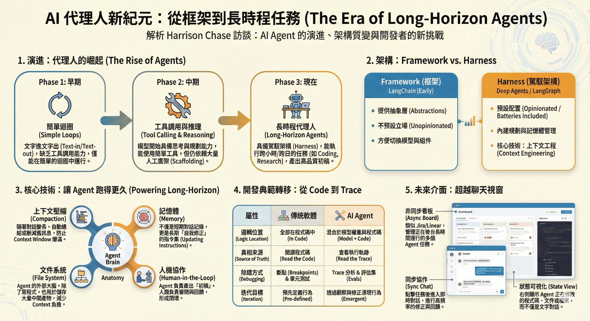

📊 分析概況
- 內容型態: podcast
- 來源: 「Training Data」Podcast 訪談逐字稿（Harrison Chase）
- 上線日期: 2026-01-21
- 主持人: Sonya Huang、Pat Grady
- 選定角色: 📰 記者 | 👨🏫 講師 | 🎯 領域專家
- 推薦對象: 廣播節目迷、相關領域人士、時間受限的學習者
會議紀錄：AI 代理與長時程代理的深度對話

、會議主題: AI 代理，長時程代理，代理工具鏈，LangChain生態系統，未來趨勢0. 導讀與補充資訊
本集資料卡
- 影片/集數標題: Context Engineering Our Way to Long-Horizon Agents: LangChain’s Harrison Chase
- 節目/系列: Training Data
- 來賓: Harrison Chase（LangChain 共同創辦人）
- 主持人: Sonya Huang、Pat Grady
- 上線日期: 2026-01-21
- 出處單位: Sequoia Capital（製作/頻道背景）
- 適合誰看: 想理解長時程 Agent、Context Engineering、Tracing、Memory 的一般讀者
官方摘要（濃縮）: Harrison 討論能長時間自主工作的「長時程代理人」為何開始成形，並回顧從早期 scaffolding 到如今 harness 架構的演進。他強調真正的分水嶺不只是模型更強，而是「上下文工程」變成基礎工程：如何壓縮資訊、管理檔案與狀態、依賴 trace 做除錯與協作，以及用記憶系統讓代理隨時間改進。
章節時間軸（精選）
00:00Introduction01:54Discussing Long Horizon Agents04:56Harness Engineering and Model Integration18:22Building Long Horizon Agents vs. Software19:43The Importance of Tracing in LangSmith20:44Context Engineering and Its Significance23:04The Role of Memory in Agent Development27:43Human Judgment in Evaluating Agents34:37Async and Sync Modes in Long Horizon Agents37:29The Role of Code Sandboxes and File Systems
這份檔案整理自 LangChain 創辦人 Harrison Chase 在「Training Data」Podcast 的訪談逐字稿。內容聚焦 AI Agent（代理人）技術從「能對話」走向「能長時間完成任務（Long-Horizon Agents）」的關鍵轉折，以及這件事為什麼會改變軟體工程的工作方式。
如果你是第一次接觸 Agent，可以先把它想成：LLM 不只回答問題，而是在一個迴圈裡做決策、呼叫工具（例如執行程式、操作檔案、查資料）、把結果再餵回自己，直到把任務推進到可交付的狀態。下面是依時間軸的白話解說與重點摘要。
0.1 逐段解說與重點摘要（依時間軸）
第一部分：長時程代理人的崛起（00:00 - 05:00）
- 核心概念: 早期的 Agent 多半只是「簡單循環」。如今模型更強，加上我們更懂得打造穩定的「駕馭架構（Harness）」與工具鏈，才讓 Agent 有機會長時間跑任務、而不是跑幾步就失控。
- 殺手級應用: 目前最成功的落地場景集中在 Coding（產出可合併的程式碼變更）與 Research（產出研究/調查的草稿）。
- 「初稿」心法: 很多工作不需要 99% 一次到位。Agent 的價值是先產出可審查的「第一版」：PR、報告草稿、調查摘要；人類再進行 review 與修正。
- 互動方式改變: 從同步問答走向「非同步長時間工作」——使用者不必盯著它跑，而是等它把結果整理好再接手。
第二部分：從 Framework 到 Harness，以及「深度代理人」（05:00 - 08:00）
- Framework（例如早期 LangChain）: 重點在抽象層（abstractions）與組裝能力，方便切換模型/工具，較少替你做「預設決策」。
- Harness（駕馭架構 / Deep Agents）: 更「有意見」的預設配置，通常內建規劃（planning）、記憶體管理、上下文壓縮（compaction）等機制，目標是把長時程任務跑穩。
- 上下文工程（Context Engineering）: 長時程任務會產生大量中間資訊；何時該保留、何時該總結、怎麼壓縮，變成工程成敗的關鍵。
- 文件系統的重要性: 現代 Harness 越來越依賴讓 Agent 讀寫檔案（把檔案當外部記憶），這也和模型在訓練資料中「學會操作 CLI/檔案」的能力息息相關。
第三部分：建構 Agent 與建構傳統軟體的差異（18:30 - 27:00）
- 邏輯的位置改變: 傳統軟體的邏輯在程式碼；Agent 的行為則是「模型權重 + 程式碼」的混合，單看程式碼常常推不出它下一步會怎麼做。
- Trace（軌跡）即真相: 在 Agent 開發裡，真正的「事實」是每次執行留下的軌跡（log/trace）。因為第 N 步看到的上下文，取決於前面每一步的實際輸出與工具回傳。
- 迭代方式改變: 你往往要在真實互動中，透過觀測、回放、修正提示與工具策略，不斷調整，才能把成功率拉上來。
第四部分：評估（Evals）與 Human-in-the-Loop（27:00 - 32:00）
- 人類判斷不可或缺: Agent 做的是人類的工作，評估往往不是「對/錯」那麼簡單，需要人類的主觀標準與情境判讀。
- LLM as a Judge: 為了把評估擴大規模，可以用 LLM 模擬評審，但關鍵是要先用少量人類標註做「校準」，讓評審模型貼近你真正的品質標準。
- 自我修復循環: 一個重要趨勢是，Agent 能拉取自己的 trace、分析失敗原因，並嘗試修 prompt 或修程式碼，形成更快的迭代回路。
第五部分：未來展望——記憶與介面（32:00 - 結束）
- 記憶（Memory）是護城河: 對話介面裡的短期記憶黏著度有限；真正有價值的是 Agent 能根據過去互動，調整自己的「工作指令」與偏好，越用越懂你的長期記憶。
- UI 會走向「非同步 + 同步」混合: 平常像專案看板（例如 Jira/Linear）一樣讓 Agent 在後台跑；需要時再切回同步對話快速校正方向。
- 狀態可視化: 介面不只顯示對話，還要讓你看到它改了哪些檔案、目前狀態是什麼、下一步打算做什麼，才好 review 與接管。
0.2 洞見與趨勢分析（給一般讀者的版本）
- 從 Prompt Engineering 走向 Context Engineering: 任務拉長後，關鍵不再只是「一句提示」，而是如何設計資訊流：總結、壓縮、外部記憶與可追蹤性。
- Coding Agent 可能是通用 Agent 的原型: 因為寫程式/操作檔案能提供最清楚的狀態與可控性；很多看似不是寫程式的任務，最後也會落到「產出可執行/可檢查的工件」。
- TDD 的新含義：Trace-Driven Development: 在 Agent 時代，程式碼不再是唯一真相來源；觀測、追蹤、回放與評估管線，會變成開發流程的核心。
- 產品要用「初稿」思維設計: 把 Agent 當成產出高品質初稿的同事，搭配良好的 review 流程與 UI，實用性通常會比追求一次到位更高。
0.3 快速 Takeaway
- 想做長時程 Agent，先把「工具鏈 + 追蹤 + 評估」建起來，再談更花俏的規劃。
- 把輸出設計成「可審查的工件」（PR、報告、表格、檔案變更）比只輸出對話更有用。
- 預期它會犯錯；真正拉開差距的是能否快速定位錯誤、讓人類好接手、讓系統好迭代。
1. 會議摘要
本次會議聚焦於 AI 代理，特別是長時程代理（long horizon agents）的發展、現狀與未來。專家團隊深入探討了長時程代理的定義、殺手級應用場景、技術演進（模型與工具鏈的協同發展）、構建代理與傳統軟體開發的差異，以及 LangChain 在此生態系統中的角色。同時，也討論了未來 UI 演變、代碼沙箱、記憶體等關鍵議題。
2. 專家團隊分析報告
2.1 📰 記者視角：故事與影響力
- 新聞價值: 這次對話揭示了 AI 代理領域一個重大的發展節點。從 Auto-GPT 的爆紅到長時程代理的落地，這本身就是一個引人入勝的故事，展示了技術的快速迭代和潛在的社會影響。
- 故事線:
- 開端: 從早期 AI 代理的嘗試（如 Auto-GPT）到現在的「終於開始起作用」的轉變，強調了模型和工具鏈的進步。
- 核心: 「初稿」概念成為殺手級應用場景，例如程式碼生成、研究報告、金融分析、客戶支援報告等，這極大地減輕了人類的初始工作負擔。
- 演變: 從「腳手架」時代轉向「工具鏈」時代，尤其是與程式碼執行、文件系統交互相關的工具鏈成為關鍵。
- 挑戰與未來: 構建代理的非確定性、追蹤（tracing）成為新的「真相來源」，以及記憶體（memory）的潛力，都充滿了故事性。
- 公眾影響: 長時程代理的普及將深刻影響程式設計、研究、金融、客戶服務等眾多行業，使 AI 真正成為生產力工具，而非僅是實驗。對話中對「代理收件箱」、「睡眠時間計算」等概念的討論，預示著 AI 將更深入地融入我們的工作與生活。
- 時效性: 討論中的「2023年末/2024年初」時間點，顯示了對當前 AI 熱點話題的緊密追蹤。
2.2 👨🏫 講師視角：學習與概念釐清
- 核心概念:
- 代理 (Agent): LLM 在一個循環中自行決策，並具備工具使用能力的系統。
- 長時程代理 (Long Horizon Agents): 能夠運行更長時間、完成更複雜任務的代理。
- 代理工具鏈 (Agent Harnesses/Toolchain): 圍繞 LLM 的抽象層，提供工具（如文件系統交互、API 調用、程式碼執行）、記憶體、壓縮等功能。
- 框架 (Framework) vs. 工具鏈 (Toolchain): 框架提供通用抽象（如 LangChain），工具鏈則更具體、更有意見，預設了執行邏輯（如 Deep Agents）。
- 「初稿」概念: 殺手級應用場景，強調代理產出可供人類審查和編輯的初步成果。
- 上下文工程 (Context Engineering): 處理和管理 LLM 上下文窗口有限性的關鍵技術，包括壓縮、記憶體等。
- 追蹤 (Tracing): 對於代理開發至關重要，是理解代理執行過程、調試和協作的「真相來源」。
- 記憶體 (Memory): 代理從互動中學習、自我改進的能力，減少開發者迭代。
- 學習路徑:
- 從簡單到複雜: 從基礎的 LLM 循環到具有工具調用的代理，再到長時程代理。
- 核心技術演進: 模型進步 → 工具鏈創新 → 上下文工程與壓縮 → 記憶體與自我改進。
- 開發模式轉變: 從依賴代碼邏輯到依賴模型邏輯 + 追蹤。
- 知識結構化:
- 代理構建的三個時代:
- 原始文本 I/O，單一/鏈式提示。
- 模型訓練工具調用，定製認知架構（但腳手架較多）。
- LLM 在循環中運行，成熟的工具鏈、上下文工程、壓縮、子代理。
- 構建代理 vs. 構建軟體:
- 軟體: 邏輯在代碼，確定性，真相來源是代碼。
- 代理: 邏輯部分來自模型，非確定性，真相來源是代碼+追蹤，更迭代。
- 代理構建的三個時代:
2.3 🎯 領域專家視角：深度知識與實踐
- 領域知識深度:
- 長時程代理的實現: 認為現在的長時程代理「終於開始起作用」，歸功於模型（LLM）本身的進步和工具鏈/腳手架的成熟。
- 殺手級應用: 強調「初稿」場景（編程、研究、報告生成、客戶支援報告）是當前最適合長時程代理的應用。
- 模型與工具鏈的協同演進: 模型變得更強，同時對壓縮、規劃、文件系統工具的理解也在加深，兩者共同演進。
- LangChain 的角色: 作為代理框架（或代理工具鏈），提供基礎抽象和「電池」，Deep Agents 則在此之上構建了更有意見的特定工具鏈。LangGraph 作為認知框架，是 Deep Agents 的基礎。
- 工具鏈工程的關鍵: 理解模型訓練的工具（如 Bash, 文件編輯），壓縮策略（上下文窗口限制），以及技能/子代理的協同工作（提示工程）。
- 構建代理與構建軟體的差異:
- 非確定性: 代理引入了非確定性，調試和理解依賴追蹤。
- 迭代性: 代理開發更加迭代，通過反饋（追蹤）來調整系統提示，而非僅僅修改代碼。
- 真相來源: 從單純代碼轉變為代碼 + 追蹤。
- 記憶體的重要性: 認為記憶體是代理實現遞歸自我改進、減少開發者迭代、建立護城河的關鍵。
- UI 演變: 預計將走向同步與異步模式的結合，借鑒專案管理工具 UI，並需要專注於「工作區」和「狀態」的可視化。
- 代碼沙箱/訪問權限: 認為代碼執行和文件系統訪問對代理至關重要，瀏覽器使用則尚不成熟。
- 最佳實踐:
- 利用「初稿」場景: 尋找能夠產生可審查初稿的應用。
- 重視追蹤: 將追蹤視為代理開發的核心「產物」或「組件」，用於調試、協作和測試。
- 人類判斷的引入: 評估代理需要結合人類判斷，Langsmith 的註釋隊列和「對齊評估」是重要實踐。
- 記憶體整合: 逐步將記憶體功能融入代理，實現自我改進。
- 常見陷阱:
- 過度依賴代碼邏輯: 忽略了模型本身的非確定性，未能充分利用追蹤。
- 低估上下文工程: 未能有效處理上下文窗口限制。
- 忽視人類判斷: 僅依賴自動化評估，導致代理與人類偏好不一致。
- 過度通用化的記憶體/改進: 記憶體應針對特定場景，而非所有場景。
- 程式設計公司 vs. 模型實驗室: 工具鏈的優劣不完全取決於模型的基礎提供者，而是對模型運作方式的深刻理解。
3. 關鍵要點與決議
3.1 核心洞察
- 長時程代理的成熟: AI 代理，特別是長時程代理，已從概念走向實踐，並開始展現出顯著的生產力。
- 「初稿」是關鍵: 能夠產生可供人類審查和編輯的「初稿」的應用場景，是目前長時程代理最成功的落地模式。
- 模型與工具鏈的協同發展: 代理的進步是 LLM 模型本身能力提升與創新工具鏈（包含上下文工程、壓縮、記憶體等）共同作用的結果。
- 開發模式的轉變: 代理開發引入了非確定性，追蹤（Tracing）成為理解、調試和協作的核心「真相來源」，取代了傳統軟體中純代碼的唯一性。
- 記憶體是未來關鍵: 記憶體被視為代理實現自我改進、個性化和建立競爭壁壘的重要因素。
- UI 的演變: 未來的 UI 將需要同時支持異步和同步模式，並關注「工作區」和狀態的可視化。
3.2 關鍵組件/產物
- 追蹤 (Tracing): 代理開發的核心「產物」。
- 評估 (Evaluation): 結合人類判斷（如 Langsmith 的註釋隊列）和 LLM 作為裁判。
- 記憶體 (Memory): 實現代理自我學習和改進的關鍵組件。
- 工具鏈 (Toolchain): 圍繞 LLM 的功能集合，包括文件系統訪問、程式碼執行等。
3.3 決議與建議
- 關注「初稿」應用: 鼓勵探索和開發能夠生成可審查初稿的長時程代理應用。
- 重視追蹤系統: 建議在代理開發流程中，將追蹤作為核心工具，用於調試、理解和團隊協作。
- 深入研究記憶體: 鼓勵進一步探索記憶體的功能，特別是如何實現安全、可控的自我改進。
- 跨界學習: 鼓勵軟體開發者學習代理開發的思維模式，同時也關注傳統軟體公司如何利用其現有數據和 API 構建代理。
- UI 設計考量: 在設計代理交互界面時，應考慮同步與異步模式的結合，以及工作區/狀態的可視化。
- 代碼沙箱的重要性: 認識到代碼執行和文件系統訪問是當前構建代理的關鍵能力。
4. 相關圖表
4.1 代理開發演進示意圖
graph TD
A["早期代理 (文本 I/O, 單一提示)"] --> B{模型與工具鏈進步}
B --> C["定制認知架構 (腳手架時期)"]
C --> D{工具鏈成熟與上下文工程}
D --> E["長時程代理 (LLM 循環, 強工具鏈, 壓縮, 記憶體)"]
subgraph tech[核心技術演進]
F[模型能力提升] --> B
G[工具鏈創新] --> D
H[上下文工程 & 壓縮] --> D
I[記憶體 & 自我改進] --> E
end
subgraph dev[開發模式轉變]
J[代碼即邏輯] --> K{代碼 + 追蹤}
K --> L["代理開發 (非確定性, 迭代)"]
end
B --> J
D --> K
E --> L
說明: 此圖展示了 AI 代理從早期到現今的發展階段，強調了模型能力、工具鏈以及開發模式的演變。
4.2 構建代理 vs. 構建軟體對比
graph LR
subgraph soft[構建軟體]
A1[確定性]
A2[邏輯在代碼]
A3[真相來源: 代碼]
A4[測試: 編程斷言]
end
subgraph agent[構建代理]
B1[非確定性]
B2[邏輯在模型 + 代碼]
B3[真相來源: 代碼 + 追蹤]
B4[測試: 追蹤 人類判斷 LLM裁判]
end
A1 -. 對比 .-> B1
A2 -. 對比 .-> B2
A3 -. 對比 .-> B3
A4 -. 對比 .-> B4
說明: 此圖對比了構建傳統軟體與構建 AI 代理在核心特性上的差異。
5. 補充說明
- 術語確認: 對話中出現了許多專有名詞和特定術語，如 Auto-GPT, LangChain, LangGraph, Sequoia, Traversal, Cloud Code, Factory, AMP, GPT-3, Langsmith, MCPs, Rogo, Leta, Claude Co-work, Linear, Jira, Kanban, Opus 4.5 等，部分術語（如 Opus 4.5, Deep Research, Manis, Kastelo）可能需要進一步確認其具體指代。
- 中英文夾雜: 為了精確傳達逐字稿內容，部分術語保留了英文原意或提供了中英文夾雜的翻譯。
- 關鍵概念: "Agent Harnesses" (代理工具鏈), "Scaffolding" (腳手架), "Context Engineering" (上下文工程), "Tracing" (追蹤), "Memory" (記憶體), "LLM as a judge" (LLM 作為裁判), "Sleep time compute" (睡眠時間計算) 是本次討論的重點。